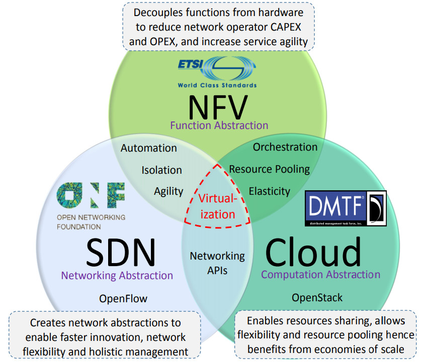

-

SDN:
Nuvem:
Relação entre NFV e as 2 tecnologias:
Enquanto NFV foca em separar as funções dos dispositivos proprietários para reduzir custos e aumentar a flexibilidade da rede, SDN foca em desacoplar o encaminhamento de dados de uma rede do gerenciamento dela, permitindo o controle centralizado de como e para onde os dados são encaminhados.
A computação em nuvem é um conceito que se assemelha ao NFV, porém aplicado a aplicações de TI e recursos computacionais ao invés de funções de rede. A computação em nuvem gerencia a quantidade de tais recursos cedida a cada usuário sob demanda de forma automatizada, sendo possível acessá-los a partir de qualquer tipo de dispositivo (celulares, PCs, servidores, etc.)
Como os 3 conceitos se tratam de virtualização com objetivos levemente diferentes, eles podem ser unidos para um cobrir as deficiências do outro: o SDN, ao criar um controlador geral, permite maior eficiência e agilidade na transferência de dados pela rede, enquanto NFV garante a virtualização desse mesmo controlador, visto que ele pode funcionar numa máquina virtual junto com os nós da rede, os quais ele vai encadear e gerenciar; já a nuvem é a própria infraestrutura na qual as VNFs seriam instanciadas, cumprindo alguns objetivos que NFV espera alcançar, como compartilhamento de recursos, flexibilidade de serviço e escalabilidade.